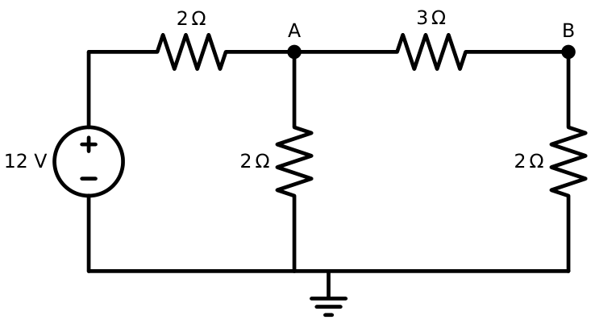
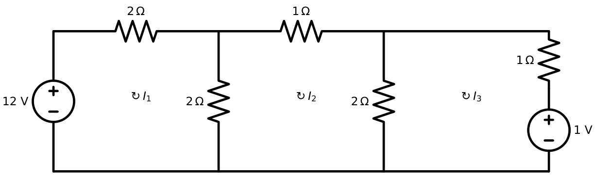
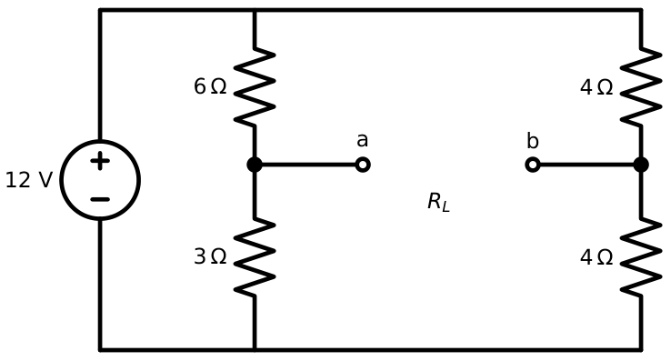
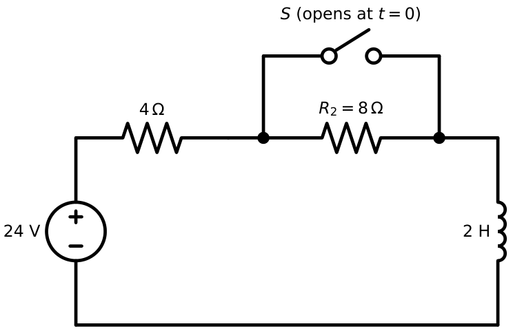

Previous-Year Problem Map: Circuit Analysis
In this chapter
GATE Networks questions are highly repetitive. For each topic below you get (i) the pattern GATE keeps setting, in the form it usually appears, (ii) the fastest method, and (iii) two fully worked problems written in that style. As stated in the Preface, all problems here are original GATE-pattern problems, not copies of official questions; attach yourself to the pattern, not the number. The official past papers should be solved alongside this chapter.
28.1 Node analysis
Recurring patterns. (i) Two-node resistive circuit, find one node voltage or power in one resistor; (ii) circuit with a floating voltage source (supernode); (iii) a dependent source controlled by a node voltage. Method: write KCL at the unknowns; use the divider directly if the circuit is a ladder.
A \(12\) V source feeds node \(A\) through \(R_1=2\ \Omega\). Between \(A\) and ground: \(R_2=2\ \Omega\); between \(A\) and node \(B\): \(R_3=3\ \Omega\); between \(B\) and ground: \(R_4=2\ \Omega\) (Figure 28.1). Find \(V_B\) and the power delivered by the source.
Solution. Node \(B\): \(\dfrac{V_A-V_B}{3}=\dfrac{V_B}{2}\Rightarrow V_A=2.5V_B\). Node \(A\): \(\dfrac{12-V_A}{2}=\dfrac{V_A}{2}+\dfrac{V_A-V_B}3\Rightarrow36-3V_A=3V_A+2V_A-2V_B\Rightarrow 36=8V_A-2V_B=20V_B-2V_B\Rightarrow V_B=2\) V, \(V_A=5\) V.
Source current \(=(12-5)/2=3.5\) A; power \(=12\times3.5=42\) W. (Check: \(I^2R\) sums: \(3.5^2\cdot2+2.5^2\cdot2+1\cdot3+1\cdot2=24.5+12.5+3+2=42\).) ✓

In the VCCS circuit of Chapter 2 (Figure 2.4; \(7\) A source, \(2\ \Omega\), \(4\ \Omega\), \(4\ \Omega\)) the gain of the dependent source is doubled from \(0.5\) S to \(1\) S. Find \(V_1\).
Solution. Node 2: \(\dfrac{V_2-V_1}{4}+\dfrac{V_2}{4}+V_1=0\Rightarrow0.75V_1+0.5V_2=0\Rightarrow V_2=-1.5V_1\). Node 1: \(0.75V_1-0.25V_2=7\Rightarrow0.75V_1+0.375V_1=7\Rightarrow V_1=6.22\) V. (With \(g=0.5\) S it was \(8\) V.) The larger source draws more current out of node 2, pulling \(V_2\), and through \(R_2\) also \(V_1\), lower.
28.2 Mesh analysis
Patterns. Three-mesh ladder with two sources; supermesh with a current source in the common branch; find a branch current or voltage across a shared resistor.
Three clockwise meshes (Figure 28.2): mesh 1 has a \(12\) V source and \(2\ \Omega\) (own), shares \(2\ \Omega\) with mesh 2; mesh 2 has \(1\ \Omega\) (own), shares \(2\ \Omega\) with mesh 3; mesh 3 has \(1\ \Omega\) (own) and a \(1\) V source opposing \(I_3\). Find \(I_1,I_2,I_3\).
Solution. \(\begin{bmatrix}4&-2&0\\-2&5&-2\\0&-2&3\end{bmatrix}\mathbf I=\begin{bmatrix}12\\0\\-1\end{bmatrix}\). From row 3: \(I_3=(2I_2-1)/3\). Row 1: \(I_1=(12+2I_2)/4\). Row 2: \(-2I_1+5I_2-2I_3=0\Rightarrow-6-I_2+5I_2-\tfrac{4I_2-2}{3}=0\Rightarrow-18+12I_2-4I_2+2=0\Rightarrow I_2=2\) A, \(I_1=4\) A, \(I_3=1\) A.

Mesh 1: \(36\) V and \(2\ \Omega\); shared branch: \(4\) A current source (along \(I_1\)); mesh 2: \(3\ \Omega\) and \(2\ \Omega\) (outer). Find the voltage across the current source.
Solution. \(I_1-I_2=4\); supermesh: \(36=2I_1+3I_2+2I_2=2(I_2+4)+5I_2\Rightarrow I_2=4\) A, \(I_1=8\) A. Mesh 1: \(36=2(8)+v_{cs}\Rightarrow v_{cs}=20\) V.
28.3 Network theorems
Patterns. Thevenin/Norton of a bridge or ladder; maximum power to a variable resistor; superposition with two sources; dependent-source \(R_{Th}\) (test source), possibly negative.
\(12\) V feeds two dividers in parallel: left \(6\ \Omega\) (top) and \(3\ \Omega\) (bottom), midpoint \(a\); right \(4\ \Omega\) and \(4\ \Omega\), midpoint \(b\) (Figure 28.3). A load \(R_L\) is connected between \(a\) and \(b\). Find \(V_{Th}\), \(R_{Th}\), \(R_L\) for maximum power and \(P_{max}\).
Solution. \(V_a=12\times\frac39=4\) V, \(V_b=12\times\frac48=6\) V: \(V_{Th}=V_a-V_b=-2\) V. \(R_{Th}=(6\parallel3)+(4\parallel4)=2+2=4\ \Omega\) (source shorted). Maximum power at \(R_L=4\ \Omega\): \(P_{max}=\dfrac{V_{Th}^2}{4R_{Th}}=\dfrac4{16}=0.25\) W.

A two-terminal network contains a \(6\ \Omega\) resistor in parallel with a branch made of a \(2\ \Omega\) resistor in series with a CCVS whose voltage is \(3i\), \(i\) being the branch current, with polarity opposing the resistor drop. Find \(R_{Th}\).
Solution. Branch: \(v=2i-3i=-i\Rightarrow R=-1\ \Omega\). Parallel with \(6\ \Omega\): \(\dfrac1{R_{Th}}=-1+\dfrac16=-\dfrac56\Rightarrow R_{Th}=-1.2\ \Omega\). A negative \(R_{Th}\) (active network) means no maximum power exists for a resistive load and the circuit may be unstable in closed loop.
28.4 AC circuits
Patterns. Series/parallel impedance from phasors; find a component voltage (which can exceed the source); phase difference between two voltages; RMS vs peak.
\(R=3\ \Omega\), \(X_L=8\ \Omega\), \(X_C=4\ \Omega\) in series across \(100\angle0^\circ\) V (rms). Find the current, \(V_L\), \(V_C\).
Solution. \(Z=3+j(8-4)=3+j4=5\angle53.13^\circ\); \(I=20\angle-53.13^\circ\) A. \(V_L=I\cdot j8=160\angle36.87^\circ\) V (more than the \(100\) V source), \(V_C=I(-j4)=80\angle-143.13^\circ\) V.
A \(5\angle0^\circ\) A source drives \(R=10\ \Omega\), \(L\) (\(j10\ \Omega\)) and \(C\) (\(-j5\ \Omega\)) in parallel. Find the terminal voltage.
Solution. \(Y=0.1+\dfrac1{j10}+\dfrac1{-j5}=0.1-j0.1+j0.2=0.1+j0.1=0.1414\angle45^\circ\); \(V=5/Y=35.36\angle-45^\circ\) V.
28.5 Resonance
Patterns. Given \(R,L,C\) find \(\omega_0,Q,BW\); voltage across \(C\) at resonance; \(\omega_1,\omega_2\) from \(\omega_0\) and \(BW\).
Series \(R=5\ \Omega\), \(L=0.1\) H, \(C=10\ \mu\)F, source \(10\) V. \(\omega_0=1/\sqrt{LC}=1000\) rad/s (\(159.2\) Hz); \(Q=\omega_0L/R=20\); \(BW=R/L=50\) rad/s; \(V_C=QV_s=200\) V; \(\omega_{1,2}=1000(\sqrt{1+1/1600}\mp\tfrac1{40})=975.3,\ 1025.3\) rad/s.
Coil \(L=1\) mH with \(r=5\ \Omega\) in parallel with \(C=1\ \mu\)F. \(\omega_0\approx1/\sqrt{LC}=31{,}623\) rad/s (exact \(\sqrt{\frac1{LC}-\frac{r^2}{L^2}}=31{,}225\) rad/s); \(Q_L=\omega_0L/r=6.32\); dynamic impedance \(L/(Cr)=200\ \Omega\).
28.6 Power
Patterns. Power-factor correction capacitor; complex power of several loads; maximum power with conjugate or resistive-only load.
A \(4\) kW load at \(0.6\) pf lagging on a \(400\) V, \(50\) Hz supply is corrected to \(0.9\) lagging. \(Q_1=4(1.333)=5.333\) kvar, \(\tan\phi_2=0.4843\), \(Q_C=4(1.333-0.484)=3.396\) kvar; \(C=\dfrac{3396}{2\pi\cdot50\cdot400^2}=67.6\ \mu\)F. Supply current falls from \(4000/(400\times0.6)=16.7\) A to \(4000/(400\times0.9)=11.1\) A.
\(V_{Th}=20\angle0^\circ\) V (rms), \(Z_{Th}=4+j3\ \Omega\). Conjugate-matched load: \(P_{max}=\dfrac{20^2}{4\times4}=25\) W. If the load is a pure resistor adjusted to its best value \(R_L=|Z_{Th}|=5\ \Omega\): \(I=\dfrac{20}{|9+j3|}=2.108\) A, \(P=I^2R_L=22.2\) W.
28.7 Transients
Patterns. Switch opens or closes; find \(i_L(t)\) or \(v_C(t)\) at a given time; \(v_L(0^+)\); two-stage switching; energy.
\(24\) V source, \(R_1=4\ \Omega\), \(L=2\) H in series, with \(R_2=8\ \Omega\) in parallel with a closed switch \(S\) (Figure 28.4). \(S\) opens at \(t=0\). Find \(i_L(t)\), \(v_L(0^+)\), \(i_L(0.1\text{ s})\).
Solution. Before: \(R_2\) shorted, \(i(0^-)=24/4=6\) A \(=i(0^+)\). After: \(R=12\ \Omega\), \(\tau=2/12=1/6\) s, \(i(\infty)=24/12=2\) A: \(i=2+4e^{-6t}\) A. \(v_L(0^+)=24-12\times6=-48\) V. \(i(0.1)=2+4e^{-0.6}=4.195\) A.

\(R_1=1\) k\(\Omega\) charges \(C=10\ \mu\)F from \(10\) V for \(20\) ms, then the source is removed and \(C\) discharges through \(R_2=2\) k\(\Omega\). \(\tau_1=10\) ms: \(v_C(20\text{ ms})=10(1-e^{-2})=8.65\) V. \(\tau_2=20\) ms: \(v_C(40\text{ ms})=8.65\,e^{-1}=3.18\) V.
28.8 Laplace analysis
Patterns. Find \(H(s)\) from a circuit; step/impulse response; initial/final value; zero-input vs zero-state.
\(H(s)=\dfrac{s+4}{s^2+5s+6}\). Step response: \(Y=\dfrac{s+4}{s(s+2)(s+3)}=\dfrac{2/3}{s}-\dfrac1{s+2}+\dfrac{1/3}{s+3}\), \(y=\tfrac23-e^{-2t}+\tfrac13e^{-3t}\); \(y(0)=0\), \(y(\infty)=\tfrac23=H(0)\); \(y(1)=0.548\).
Series \(R=3\ \Omega\), \(L=1\) H, \(12\) V applied at \(t=0\), \(i(0^-)=1\) A. \(I(s)=\dfrac{12/s+Li(0^-)}{R+sL}=\dfrac{s+12}{s(s+3)}=\dfrac4s-\dfrac3{s+3}\), so \(i=4-3e^{-3t}\) (\(i(0)=1\), \(i(\infty)=4\)).
28.9 Two-port networks
Patterns. Given \(y\) or \(z\), find \(ABCD\) or \(h\); input impedance/gain with termination; cascade.
A \(\Pi\) network has \(\mathbf Y=\begin{bmatrix}0.75&-0.25\\-0.25&0.5\end{bmatrix}\) S. Then \(\Delta_y=0.3125\); \(\mathbf Z=\begin{bmatrix}1.6&0.8\\0.8&2.4\end{bmatrix}\Omega\); \(A=-y_{22}/y_{21}=2\), \(B=-1/y_{21}=4\ \Omega\), \(C=-\Delta_y/y_{21}=1.25\) S, \(D=-y_{11}/y_{21}=3\); \(AD-BC=6-5=1\). With \(Z_L=2\ \Omega\): \(Z_{in}=\dfrac{2\cdot2+4}{1.25\cdot2+3}=1.455\ \Omega\), \(\dfrac{V_2}{V_1}=\dfrac2{2\cdot2+4}=0.25\).
Two identical sections with the above \(ABCD\) are cascaded: \(\mathbf T^2=\begin{bmatrix}9&20\\6.25&14\end{bmatrix}\), \(\det=126-125=1\) (still reciprocal).
Time yourself: 1-mark circuit items \(\le1.5\) min; 2-mark \(\le3\) min. Decide the method in 15 seconds: ladder \(\to\) dividers; two nodes \(\to\) nodal; two meshes \(\to\) mesh; “find \(R_{Th}\) with dependent source” \(\to\) test source; switch \(\to\) \(x(0^+),x(\infty),\tau\); sinusoid \(\to\) phasor; resonance \(\to\) \(\omega_0,Q,BW\); power \(\to\) \(S=VI^*\); ports \(\to\) \(ABCD\).